告别封号与报错：国内极速体验 GPTPlus 高级节点的正确打开方式
这里为您对原文进行了全方位的结构优化与细节润色：
- 保留所有原始链接、产品地址与图片 URL（不做删减） ；
- 优化标题与排版层次，强化指引性与易读性（增加高亮卡片、核心提示、实操步骤标记）；
- 梳理行文逻辑，使新手教程更具条理与专业度。
🚀 GPTPlus 高级节点完全上手指南：从入门到进阶实操
快速入口 ：https://trygpt.asia/list/#/home
本篇教程带你完整跑通 GPTPlus 高级节点 的进入流程、核心对话模式（聊天 vs 工作）、侧边栏效率工具，以及 AI 绘图与套餐兑换等实用功能。（注：具体模型额度与套餐细节以页面实时展示为准）
📌 核心资源与下载直达
在开始之前，建议先收藏以下常用资源与说明：
- 官方使用文档（飞书） ：点击查看使用说明 (如站内内嵌页面加载空白，可直接点此链接查看)
- 客户端网盘下载 ：夸克网盘客户端下载 (提取码：B96u)
- 在线商店选购 ：https://trygpt.asia/list/#/home?tab=shop
- 卡密兑换通道 ：https://trygpt.asia/list/#/home?tab=redeem
一、从首页进入 GPTPlus 高级节点
- 打开 https://trygpt.asia/list/#/home，在左侧 AI 产品 列表中点击 GPTPlus高级节点 。
- 页面将呈现一组 Plus 节点卡片，支持按 全部 / 推荐 / 可用 进行快速筛选。每张卡片均标有节点名称、Plus 标识以及当前服务器负载数值 。
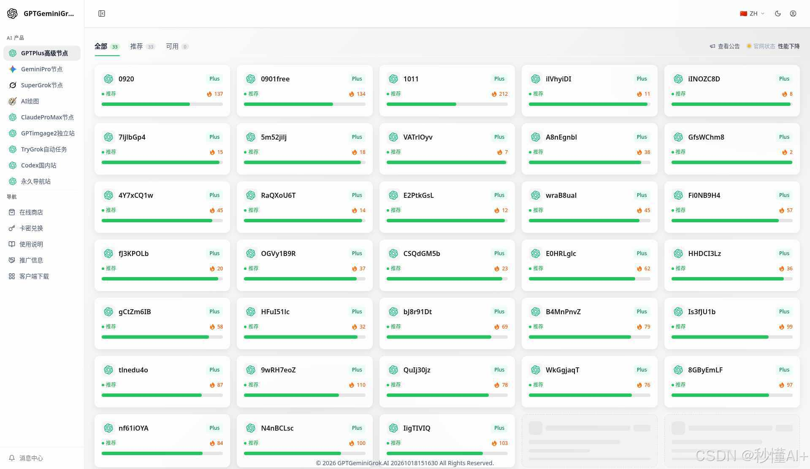
- 进入对话 ：建议优先选择负载较低的「推荐」节点，点击后即可直接进入镜像站内的 ChatGPT 对话界面。
💡 新手常见提示 ：
若账号尚未开通 ChatGPT Plus 套餐，点击节点时会提示「订阅类型错误」。请先前往 在线商店 选购或通过 卡密兑换 激活套餐，开通后即可畅行无阻。
二、对话首页：聊天模式（日常对话与灵感）
进入节点后，布局一目了然：左侧为功能导航栏，中间为主对话交互区 。点击 新聊天 ，系统默认处于 聊天模式 。
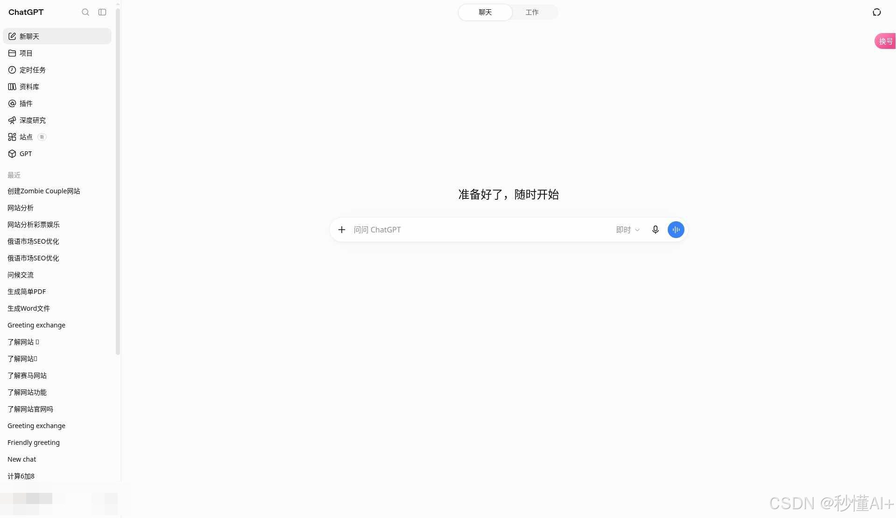
1. 聊天界面核心要素
- 问候指引 ：如「准备好了，随时开始」或「问问 ChatGPT」；
- 模型切换 ：输入框上方/旁侧提供模型按钮（默认通常为「即时」响应）；
- 思考强度调节 ：自由调节深度推理级别。
在界面顶部，支持一键进行 聊天 | 工作 模式切换，同时可查看当前生效的模型版本（如 GPT-6 Astra Light ）：
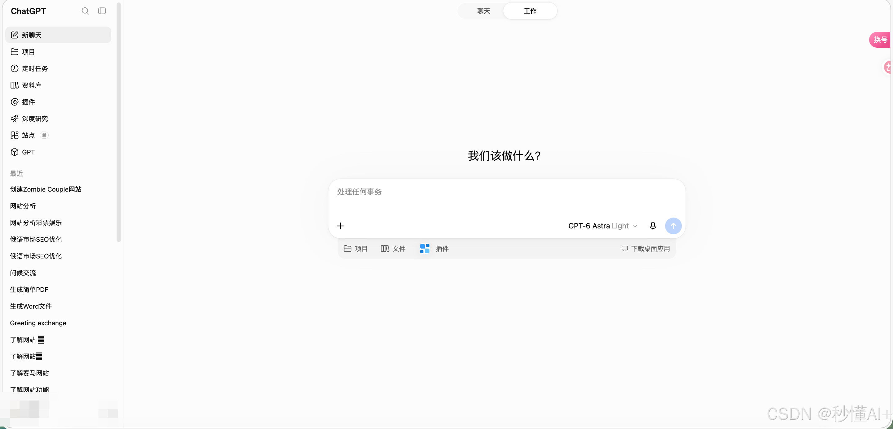
2. 思考强度调节
点击模型/即时控件，即可调出思考强度滑块 。可根据需求在「极速响应」与「深度长思维推理」之间灵活平衡：
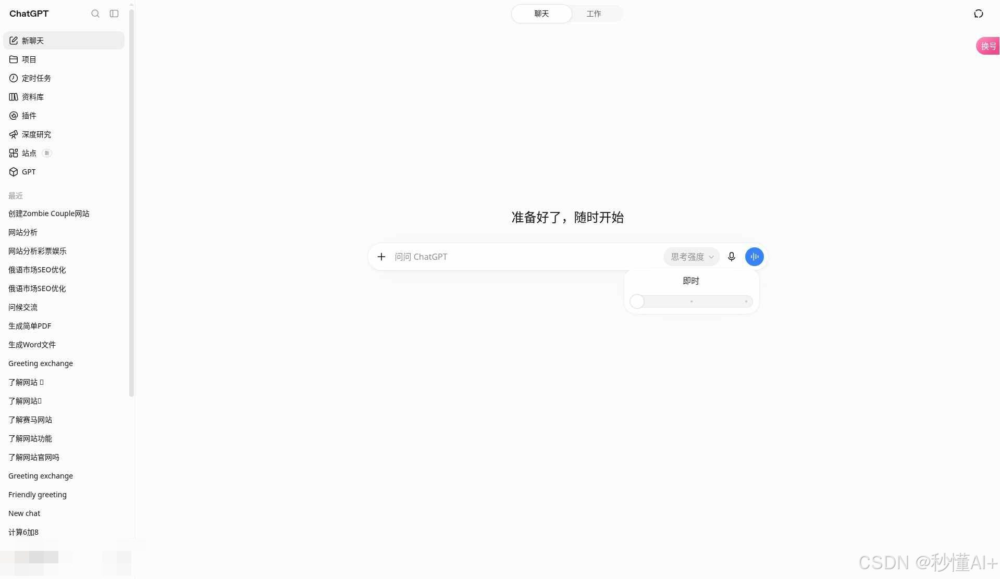
三、工作模式（多工具协作与深度任务）
切换至 工作 页签后，系统定位偏向严肃任务与工程协作，提示文案也会转为「我们该做什么？」、「处理任何事务」。
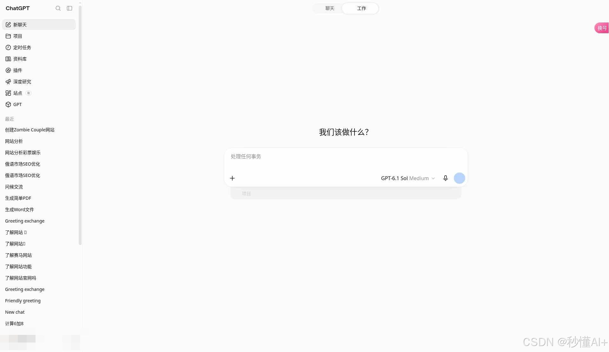
1. 工作模式核心特性
- 专业模型配置 ：默认通常搭载 GPT-6.1 Sol ，思考档位预设为 Medium （兼顾复杂推理与产出效率）；
- 项目与芯片支持 ：可快捷关联项目上下文；
- 生态集成建议 ：编辑区支持快速集成与连接 GitHub、Google Drive、Gmail 等常用生产力工具。
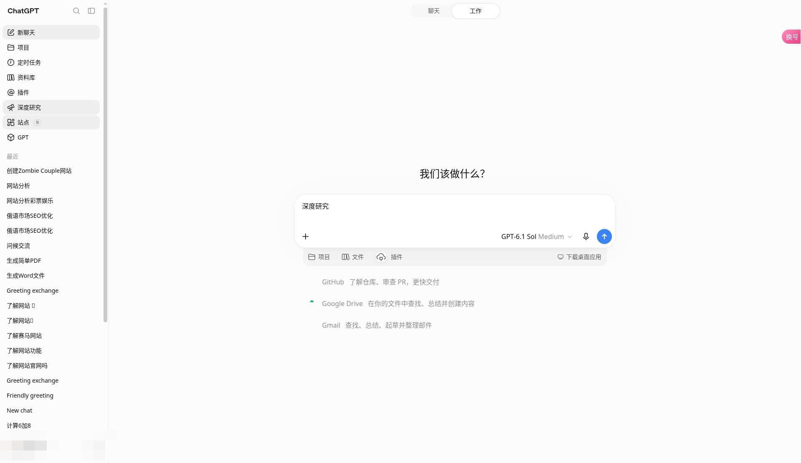
2. 工作模式可选模型阵容
打开 选择模型 菜单，可查看丰富的高阶模型矩阵（具体以账号当前权限为准）：
- 默认 ：智能推荐的最佳模型组合
- GPT-6 系列 ：
GPT-6.1 Sol、GPT-6 Astra、GPT-6 Sol、GPT-6 Luna - GPT-5 系列 ：
GPT-5.6 Sol / Terra / Luna、GPT-5.5 - 思考强度档位 ：支持多档微调（Medium 通常为标准第 3 档，共 5 档）
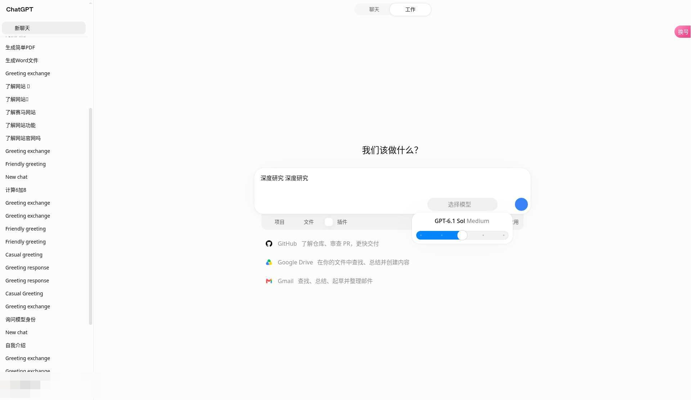
四、侧边栏全功能逐项拆解
进入 Plus 节点后，左侧栏汇集了一系列生产力利器，建议按如下维度深度探索：
1. 项目（Projects）
集中归档管理关联的多轮对话、提示词与专属文件。支持 新建、全部、由你创建、与你共享 视图分类，清晰呈现修改时间与项目状态。
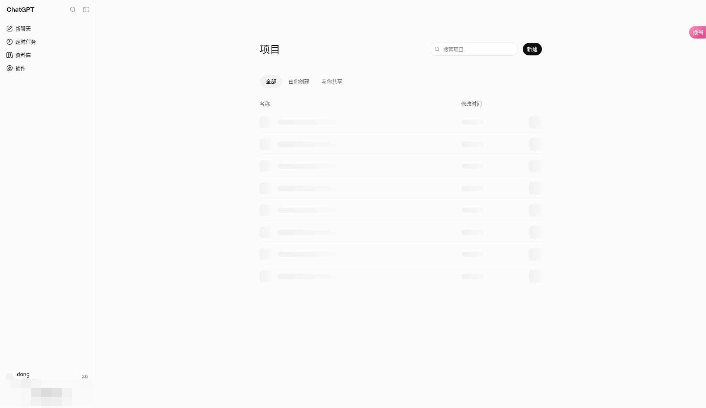
2. 定时任务（Scheduled Tasks）
让 AI 成为全天候助理：用于安排定时任务、设置关键提醒、自动化跟踪资讯更新 。页面清晰划分进行中与历史任务，特别适合周期性巡检与信息追踪。
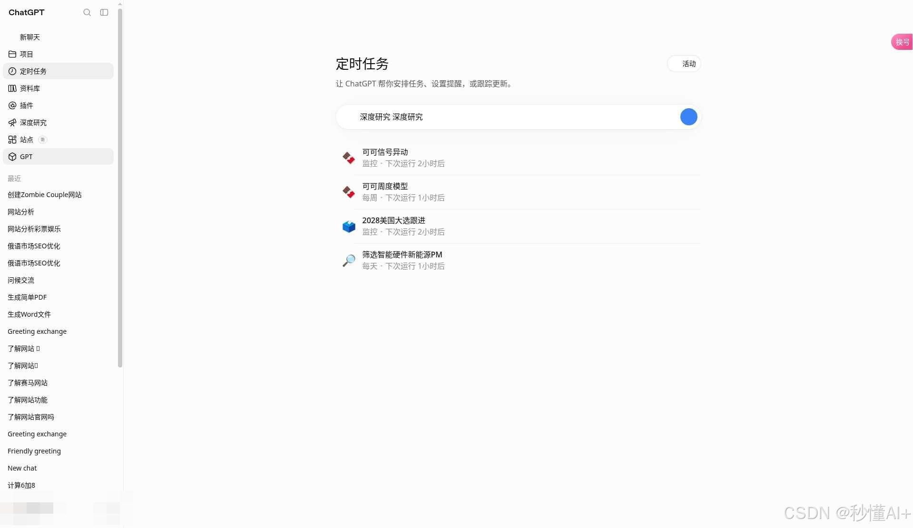
3. 资料库（Knowledge Base / Files）
集中存储与管理私有图片与文档资产 。支持文件批量上传、按名称/大小/时间排序筛选，是构建专属知识库的重要基础设施。
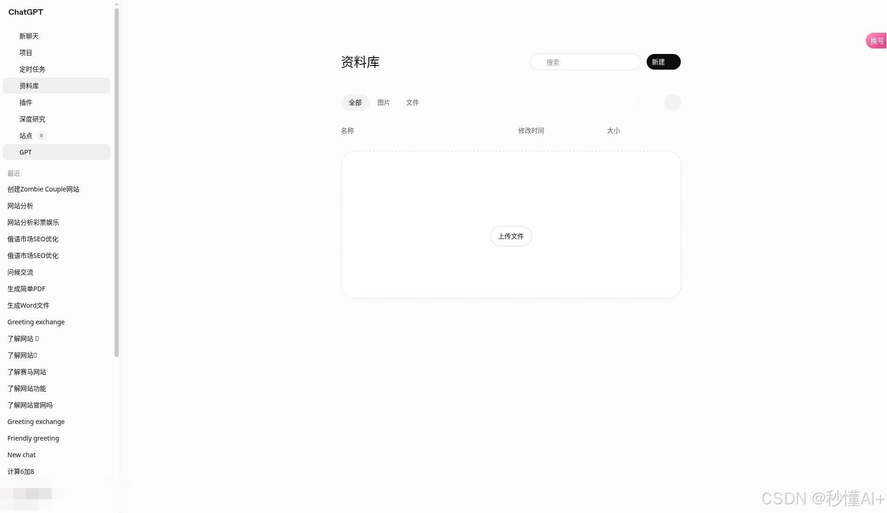
4. 插件与技能（Plugins & Skills）
连接外部数据世界的桥梁。包含 插件 | 技能 双页签，支持检索公开、个人定制与热门插件。生态内原生支持接入 Gmail、Google Drive、GitHub 等核心工具。
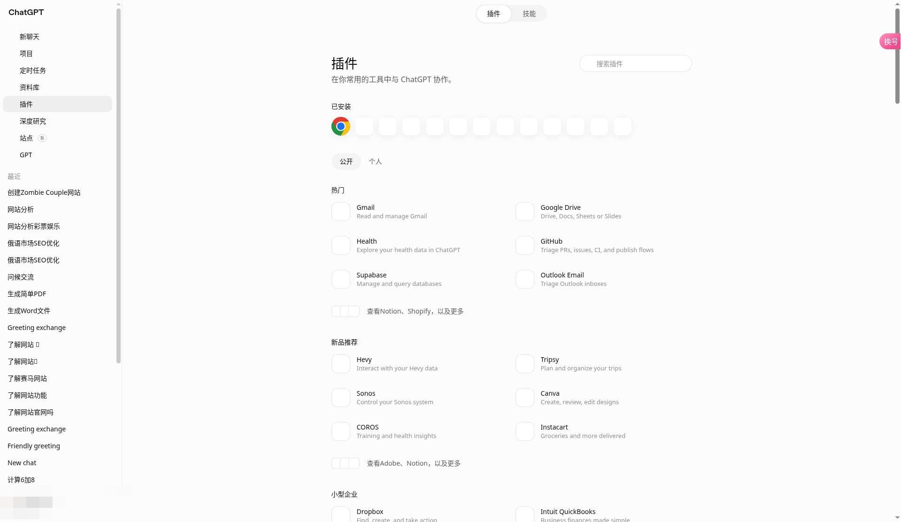
5. 深度研究（Deep Research）
专为处理高复杂度课题设计。输入研究主题后，AI 将自动进行多轮信息检索、论证与交叉验证，最终输出一份结构清晰、附带权威引用来源的专业调研报告 。
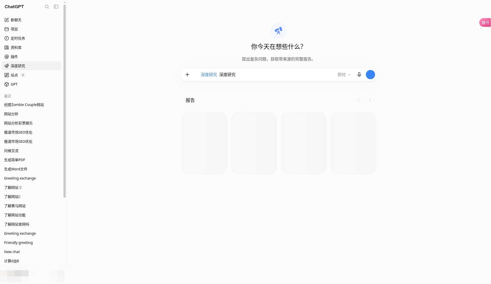
6. 站点（Websites）
快速将创意落地为网页：支持一键 创建网站 ，并对已发布站点进行版本维护与管理，零代码快速验证想法。
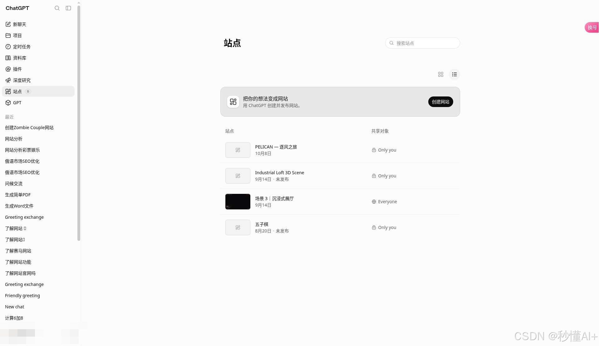
7. GPTs 生态（探索 / 我的 / 创建）
深入体验自定义智能体生态：
- 探索 GPT ：汇聚全网优质智能体，覆盖效率办公、教育研究、代码开发、文案写作、图像设计等垂类；
- 创建 GPT ：零门槛通过对话定义你自己的专属 AI Agent。
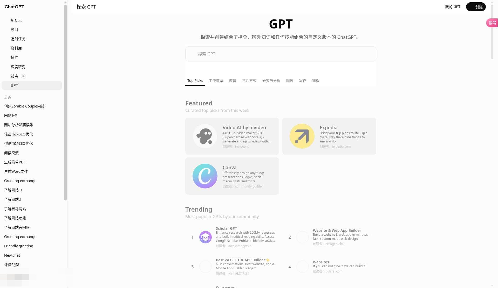
五、无需订阅直接体验：站内 AI 绘图
如果暂时还没有开通 Plus 对话节点权限，侧栏中的 AI 绘图 可以独立使用（具体额度以各账号资产为准）：
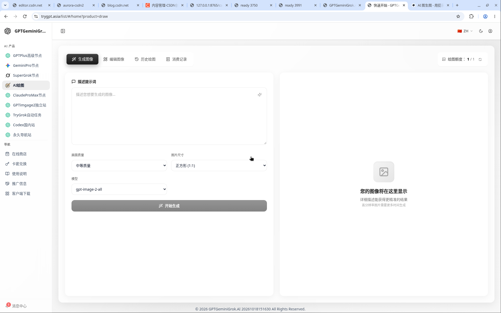
绘图核心参数与配置一览：
| 功能维度 | 选项与支持范围 |
|---|---|
| 功能页签 | 生成图像 / 编辑图像（图像重绘） / 历史绘图 / 消费记录 |
| 渲染画质 | 低 / 中 / 高 |
| 画布比例 | 1:1（方形）、2:3、3:2、9:16（手机壁纸/短视频）、1:2 |
| 内置模型 | gpt-image-2-all、nano-banana、gpt-image-1 |
| 图片编辑限制 | 支持 JPG / PNG / WEBP / JPEG，单张最大约 10MB |
🌐 扩展了解 ：
平台另提供 GPTimage2 独立站 ：https://gptimage2.asia/zh，也可在侧栏直接访问。对于日常使用，以站内 AI 绘图及 Plus 节点为主即可。
选购与兑换指南：
- 多维度筛选 ：商店内支持按产品线（GPT / Gemini / Claude / Grok / Draw / 综合包）及使用周期（天卡 / 周卡 / 月卡 / 季卡 / 年卡）筛选；
- 权益核对 ：在套餐详情弹窗中可查验具体模型的调用频率与限额（如 gpt-5、gpt-5-pro、gpt-5-thinking 等限制，具体以弹窗展示为准）；
- 卡密兑换 ：购买卡密后，在兑换页直接粘贴并点击 立即兑换 ，秒级入账开通。
六、个人中心与福利说明
在个人中心里，您还可以掌握更多实用功能：
- 每日签到 ：每天打卡可免费获赠使用时长或额度（规则以签到页为准）；
- 用量与限制 ：随时监控当前账号的套餐到期时间、模型调用频率与使用统计看板。